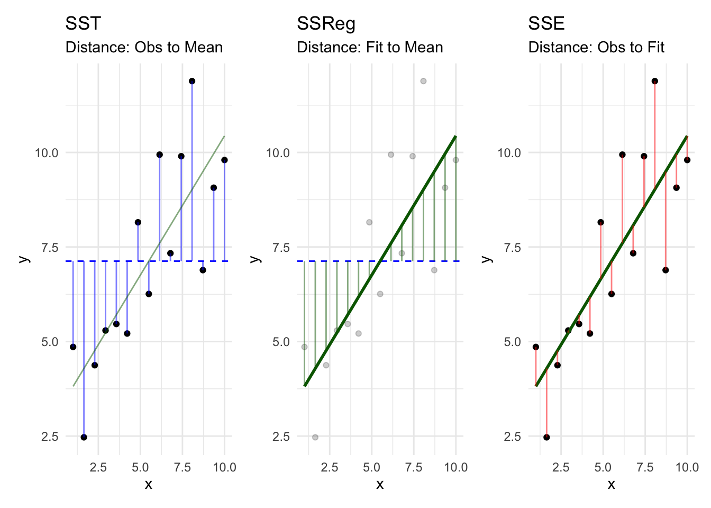
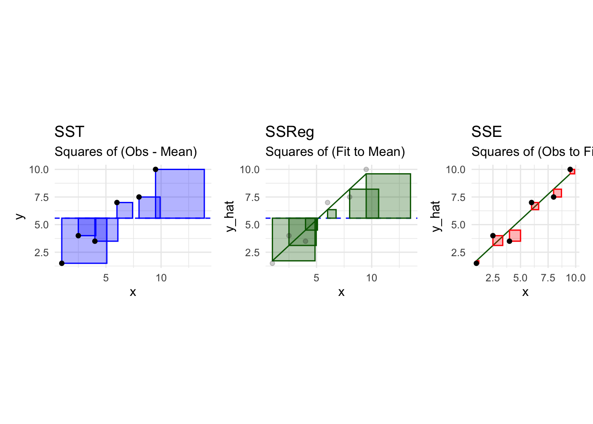
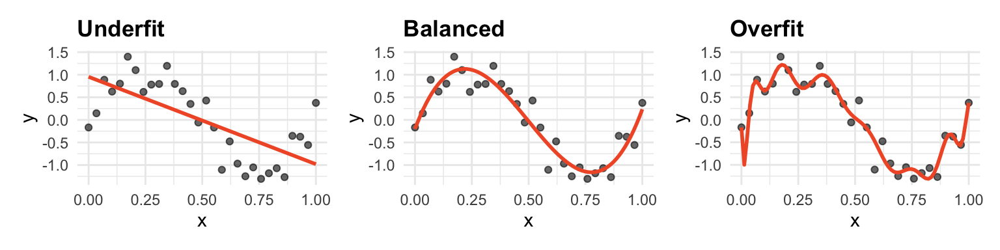

Analysis of Variance Table
Model 1: rides ~ temp_actual + windspeed + weekend
Model 2: rides ~ temp_actual + windspeed + weekend + holiday
Res.Df RSS Df Sum of Sq F Pr(>F)
1 496 755019445
2 495 743486506 1 11532939 7.6784 0.005799 **
---
Signif. codes: 0 '***' 0.001 '**' 0.01 '*' 0.05 '.' 0.1 ' ' 1Model Selection
Day 15
MLR so far
- Interpreting coefficients
- Writing lines for different groups (categorical predictors)
- Inference for a single coefficient
- Inference for linear combinations of coefficients
- F tests
- Influential points and diagnostics (leverage, standardized residuals, cook’s distance)
- Multicollinearity
. . .
Today → putting it all together to build a model
Warm up (quiz review)
bikes_A predicts rides from temperature, windspeed and weekend. bikes_B adds holiday.
- Which model is the full model? Write the null hypothesis.
- What is \(d\)? What are \(df_{full}\) and \(SSE_{reduced}\)?
- State your conclusion in context.
- If you had instead used the \(t\)-test for
holidayyesinbikes_B, what p-value would you expect? Why?
Timing: warm-up + sums of squares review ~12 min.
Review: SST/SSReg/SSE

But, we work with sum of squares


Linear Regression tilt and shifts the line until the total area of the red squares are as small as possible (“least squares”)
\(R^2\): proportion of the blue area (SSTotal) that is successfully covered by the green squares (SSRegr)
\(R^2_{adj} = 1 - \frac{MSE}{MST}\): same idea, but each model is “charged” for the number of \(\beta\)’s it uses
\(h_i\): a point becomes more influential as it moves further away from \(\bar{x}\) because the corresponding red square grows quadratically
Overall F test: \(F = \frac{MSReg}{MSE}\)
- is the “average” green square significantly larger than the “average” red square?
Sequential sum-of-squares F test: \(F=\frac{(SSE(reduced)-SSE(full))/(df_{reduced}-df_{full})}{SSE(full)/df_{full}}\)
- are the red squares for a “larger” model significantly smaller than the red squares for a “smaller” model?
- Linear Regression tilt and shifts the line until the total area of the red squares are as small as possible (“least squares”)
- \(R^2\): proportion of the blue area (SSTotal) that is successfully covered by the green squares (SSRegr)
- \(R^2_{adj} = 1 - \frac{MSE}{MST}\): same idea, but each model is “charged” for the number of \(\beta\)’s it uses
- \(h_i\): a point becomes more influential as it moves further away from \(\bar{x}\) because the corresponding red square grows quadratically
- Overall F test: \(F = \frac{MSReg}{MSE}\)
- is the “average” green square significantly larger than the “average” red square?
- Sequential sum-of-squares F test: \(F=\frac{(SSE(reduced)-SSE(full))/(df_{reduced}-df_{full})}{SSE(full)/df_{full}}\)
- are the red squares for a “larger” model significantly smaller than the red squares for a “smaller” model?
Today: building an explanatory model
Question:
How are weekends and holidays associated with ridership, after accounting for the weather?
. . .
Two reasons to build a model:
- Explanatory: understand the relationship between the response and particular predictors. We care about the coefficients (today!)
- Predictive: make accurate predictions for new data. We care about the predictions (after the quiz)
Idea: how do we decide what variables to include?
| date | season | year | month | day_of_week | weekend | holiday | temp_actual | temp_feel | humidity | windspeed | weather_cat | rides |
|---|---|---|---|---|---|---|---|---|---|---|---|---|
| 2011-01-01 | winter | 2011 | Jan | Sat | TRUE | no | 57.39952 | 64.72625 | 80.5833 | 10.749882 | categ2 | 654 |
| 2011-01-03 | winter | 2011 | Jan | Mon | FALSE | no | 46.49166 | 49.04645 | 43.7273 | 16.636703 | categ1 | 1229 |
| 2011-01-04 | winter | 2011 | Jan | Tue | FALSE | no | 46.76000 | 51.09098 | 59.0435 | 10.739832 | categ1 | 1454 |
| 2011-01-05 | winter | 2011 | Jan | Wed | FALSE | no | 48.74943 | 52.63430 | 43.6957 | 12.522300 | categ1 | 1518 |
| 2011-01-07 | winter | 2011 | Jan | Fri | FALSE | no | 46.50332 | 50.79551 | 49.8696 | 11.304642 | categ2 | 1362 |
| 2011-01-08 | winter | 2011 | Jan | Sat | TRUE | no | 44.17700 | 46.60286 | 53.5833 | 17.875868 | categ2 | 891 |
| 2011-01-10 | winter | 2011 | Jan | Mon | FALSE | no | 43.13148 | 45.57992 | 48.2917 | 14.958889 | categ1 | 1280 |
| 2011-01-11 | winter | 2011 | Jan | Tue | FALSE | no | 44.47892 | 49.23176 | 68.6364 | 8.182844 | categ2 | 1220 |
| 2011-01-12 | winter | 2011 | Jan | Wed | FALSE | no | 44.74725 | 46.44257 | 59.9545 | 20.410009 | categ1 | 1137 |
| 2011-01-13 | winter | 2011 | Jan | Thu | FALSE | no | 44.17700 | 45.57947 | 47.0417 | 20.167000 | categ1 | 1368 |
Which variables would you include to answer our question? Why?
A recipe for explanatory models
- Start with the question. Which variables are you interested in? Which do you need to adjust for? These stay in the model, even if they aren’t “significant”
- Look before you fit. Check for predictors that carry (almost) the same information
- Fit a small set of candidate models (not every possible combination!)
- Compare the candidates: \(F\) test for nested models; adjusted \(R^2\), AIC, or BIC for any models
- Check the conditions for the model you choose
- Interpret and justify your choice
Timing: framing + recipe ~5 min. Keep coming back to this slide; each section below is one step.
Step 1: Our candidate models
- Interested in:
weekend,holiday - Adjust for: weather (temperature, windspeed, humidity)
| Model | Predictors |
|---|---|
| A | temp_actual + windspeed + weekend |
| B | A + holiday |
| C | B + humidity |
| D | C + temp_feel |
| E | temp_feel + humidity + weekend + holiday |
Step 2: Look before you fit
bikes |>
select(temp_actual, temp_feel, windspeed, humidity) |>
cor() |>
round(2) temp_actual temp_feel windspeed humidity
temp_actual 1.00 0.98 -0.11 0.27
temp_feel 0.98 1.00 -0.15 0.27
windspeed -0.11 -0.15 1.00 -0.32
humidity 0.27 0.27 -0.32 1.00. . .
temp_actual and temp_feel are almost the same variable → we’d expect multicollinearity if we include both
Timing: Steps 1-3 ~13 min (min 17-30).
Step 3: Compare nested models with an \(F\) test
Which pairs are nested? Circle one for each.
| Model 1 | Model 2 | Nested? |
|---|---|---|
| A | B | yes / no |
| B | D | yes / no |
| C | E | yes / no |
| A | C | yes / no |
. . .
\[F = \frac{(SSE_{reduced} - SSE_{full}) / d}{SSE_{full} / df_{full}}\]
- Numerator: improvement per \(\beta\) added
- Denominator: average variance/noise in the full model
- A large \(F\) means: the bigger model reduces SSE by much more than we’d expect from noise alone.
Step 3: Compare nested models with an \(F\) test
Adding variables one at a time:
| step | df | F | p-value |
|---|---|---|---|
| A to B: add holiday | 1 | 7.68 | 0.006 |
| B to C: add humidity | 1 | 85.43 | <0.001 |
| C to D: add temp_feel | 1 | 3.28 | 0.071 |
. . .
holiday: we keep it no matter what (it’s part of our question), but the data also support ithumidity: big improvement in SSEtemp_feel: not much evidence that it helps once we havetemp_actual
Careful: temp_actual and temp_feel
| model | term | estimate | std.error | p.value |
|---|---|---|---|---|
| C (without temp_feel) | temp_actual | 94.88 | 5.21 | <0.001 |
| D (with temp_feel) | temp_actual | 46.31 | 27.30 | 0.090 |
| D (with temp_feel) | temp_feel | 45.07 | 24.87 | 0.071 |
Standard error of temp_actual goes up by a factor of about 5.2 (VIF \(\approx\) 30)
→ temperature clearly matters, but in model D neither temperature variable looks significant on its own 🫠
→ pick one temperature variable
When the \(F\) test can’t help
bikes_C <- lm(rides ~ temp_actual + windspeed + weekend + holiday + humidity, data = bikes)
bikes_E <- lm(rides ~ temp_feel + humidity + weekend + holiday, data = bikes)Is bikes_E nested in bikes_C? Could we use anova(bikes_E, bikes_C)?
. . .
- Non-nested models: neither is a special case of the other, so the \(F\) test does not apply
- Many candidate models: each \(F\) test needs a nested pair, and repeated testing is a problem
- We need tools that work for any two models fit to the same data
Adjusted \(R^2\)
\(R^2_{adj} = 1 - \dfrac{MSE}{MST} = 1 - \dfrac{SSE/(n-(p+1))}{SST/(n-1)}\)
- \(R^2\) always goes up when we add predictors; \(R^2_{adj}\) can go down
- can be used for nested and non-nested models
- no formal test/rules for “better enough”
summary(bikes_C)$adj.r.squared[1] 0.4825335summary(bikes_E)$adj.r.squared[1] 0.4453567Information criteria: AIC and BIC
The following “information criteria” can be used to compare nested or non-nested models (smaller values are better)
\[IC = \text{Measure of Fit} + \text{Penalty}\]
\[AIC = n \log(SSE/n) + 2(p+1)\]
\[BIC = n \log(SSE/n) + \log(n) \cdot (p+1)\]
\(p\) = number of predictors in the model. Fit term gets smaller with a bigger model; the penalty gets bigger. BIC penalizes more than AIC (since \(\log(n) > 2\) when \(n \ge 8\))
In R: AIC(model) and BIC(model)
Example: adjusted \(R^2\) and \(F\) tests by hand
A researcher fits four nested models to \(n = 40\) observations. Fill in the table, then answer the questions.
| Model | Predictors | \(p\) | SSE | \(\hat\sigma^2 = SSE/(n-(p+1))\) | \(R^2_{adj}\) |
|---|---|---|---|---|---|
| M0 | none | 0 | 980 | 25.13 | 0 |
| M1 | \(x_1\) | 1 | 520 | 13.68 | 0.455 |
| M2 | \(x_1, x_2\) | 2 | 410 | ||
| M3 | \(x_1, x_2, x_3\) | 3 | 398 |
\(R^2_{adj} = 1 - \hat\sigma^2 / \hat\sigma^2_{M0}\) (since \(MST = SSE_{M0}/(n-1)\)). \(F = \frac{(SSE_{reduced} - SSE_{full}) / d}{SSE_{full} / df_{full}}\)
(a) Which model is best by \(R^2_{adj}\)?
(b) Use an \(F\) test to compare M3 to M2. State \(d\) and \(df_{full}\). (reminder: \(F = \frac{(SSE_{reduced} - SSE_{full}) / d}{SSE_{full} / df_{full}}\))
(c) Do the two tools agree? Which model would you choose?
Step 4: Compare all of our candidates
Open up the R activity for today and work through parts 1-3 in your groups
15:00
Step 4: Compare all of our candidates
| Model | k | Adj R2 | AIC | BIC |
|---|---|---|---|---|
| A: temp + wind + weekend | 4 | 0.386 | 8542.8 | 8563.8 |
| B: A + holiday | 5 | 0.394 | 8537.1 | 8562.4 |
| C: B + humidity | 6 | 0.483 | 8459.3 | 8488.8 |
| D: C + temp_feel | 7 | 0.485 | 8458.0 | 8491.7 |
| E: temp_feel + humidity + weekend + holiday | 5 | 0.445 | 8493.0 | 8518.3 |
- Model C beats model E under every criterion, which no \(F\) test could tell us
- C vs D: adjusted \(R^2\) and AIC slightly prefer D, BIC prefers C. When the tools disagree (and there’s multicollinearity!), choose the simpler model
Steps 5 and 6: Check and interpret

| term | estimate | conf.low | conf.high |
|---|---|---|---|
| weekendTRUE | -777 | -1000 | -554 |
| holidayyes | -1093 | -1751 | -435 |
Using model C, answer our question in context.
Comparing two models
graph TD
classDef default fill:#e8f5e9,stroke:#2e7d32,stroke-width:2px,color:#1b5e20;
A(["Are the models nested?"])
B(["Do they differ by<br>one coefficient?"])
C["t-test for that coefficient<br>(same as the F test)"]
D["Extra sums of squares F test<br>anova(reduced, full)"]
E["Adjusted R², AIC, or BIC<br>(no p-value)"]
F["If the tools disagree,<br>choose the simpler model"]
A -->|YES| B
A -->|NO| E
B -->|YES| C
B -->|NO| D
C --> F
D --> F
E --> F
Summary
| Tool | Nested only? | p-value? | Notes |
|---|---|---|---|
| \(F\) test | Yes | Yes | The formal test for nested models |
| Adjusted \(R^2\) | No | No | Easy, but no rule for “better enough” |
| AIC | No | No | Most willing to add terms |
| BIC | No | No | Most conservative |
- Use domain knowledge first. Tools compare candidate models; they don’t replace thinking.
- Justify your model choice!
. . .
Next time → Quiz 2! After that: how well does a model predict new data?
Appendix: Sequential ANOVA (the anova() function)
When you use anova() on a single model, R provides a table of extra Sum of Squares (SS) for terms added sequentially
model_1 <- lm(rides ~ temp_actual + windspeed + weekend + temp_actual:weekend +
windspeed:weekend, data = bikes)
anova(model_1)Analysis of Variance Table
Response: rides
Df Sum Sq Mean Sq F value Pr(>F)
temp_actual 1 411018312 411018312 269.0759 < 2.2e-16 ***
windspeed 1 22504757 22504757 14.7329 0.00014 ***
weekend 1 48801976 48801976 31.9485 2.68e-08 ***
temp_actual:weekend 1 110 110 0.0001 0.99323
windspeed:weekend 1 425250 425250 0.2784 0.59799
Residuals 494 754594085 1527518
---
Signif. codes: 0 '***' 0.001 '**' 0.01 '*' 0.05 '.' 0.1 ' ' 1Appendix: How do the tools relate?
For the bikes data ($n = $ 500), adding \(d = 1\) parameter, the larger model is preferred when
| Rule | Prefers larger model if F is bigger than |
|---|---|
| F test, \(\alpha = 0.05\) | 3.86 |
| AIC | 1.99 |
| BIC | 6.20 |
Appendix: Overfitting (move to prediction day)
